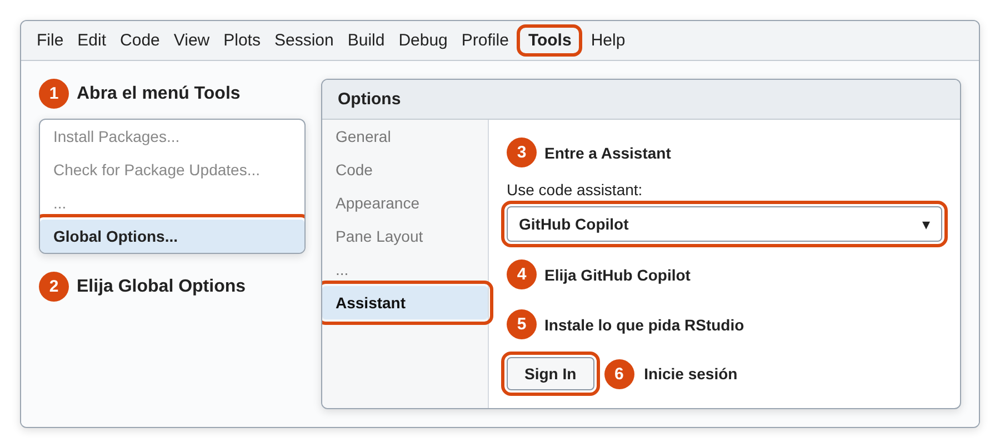
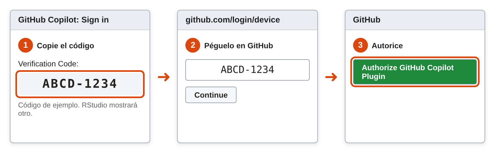
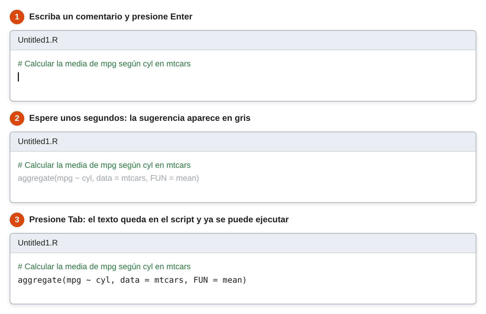

Las herramientas de inteligencia artificial (IA) pueden sugerir código, explicar un error o proponer un gráfico sin salir de RStudio. Son útiles, pero no reemplazan el criterio estadístico: un código puede ejecutarse sin errores y aun así responder mal la pregunta.
En esta página se presentan las principales opciones y la forma de usarlas con responsabilidad. La regla es simple: use solo el código que pueda explicar y verificar.
| Herramienta | Qué hace | Costo | Se recomienda para |
|---|---|---|---|
| GitHub Copilot | Sugiere código mientras se escribe | Tiene plan gratuito con límites y plan para estudiantes | Empezar |
| Posit Assistant | Conversa, lee la sesión de R y trabaja con los datos cargados | Suscripción mensual | Quien quiera un asistente completo |
Los planes, precios y modelos cambian con frecuencia. Lo indicado aquí corresponde a la fecha de revisión de esta página. Antes de pagar o instalar, confírmelo en la fuente oficial.
¿Qué problema resuelve? Ayuda a escribir código más rápido, sobre todo en tareas repetitivas o cuando no se recuerda la instrucción exacta.
¿Qué hace? Mientras se escribe en RStudio, propone la continuación del código en letra gris. Si la propuesta sirve, se acepta con la tecla Tab. Se usa principalmente para generar código, no para conversar.
¿Qué son GitHub y Copilot? GitHub es un sitio web para guardar y compartir código. Copilot es su asistente de IA. Para usarlo en RStudio hacen falta tres cosas, en este orden: una cuenta de GitHub, Copilot activado en esa cuenta y RStudio conectado a la cuenta.
Antes de empezar, revise en Help > About RStudio que su versión sea 2023.09.0 o posterior. Las versiones de RStudio Desktop se identifican por año, así que cualquier versión de 2024 en adelante sirve. También necesita internet.
Ingrese a https://github.com/signup, escriba su correo, una contraseña y un nombre de usuario, y confirme el correo. Si ya tiene cuenta, siga al paso 2.
Elija una de estas opciones. Ninguna requiere comprar un plan.
| Opción | Para quién | Cómo se activa |
|---|---|---|
| Copilot Free | Cualquier cuenta personal. Incluye hasta 2,000 sugerencias al mes | Inicie sesión en GitHub, haga clic en su foto de perfil, arriba a la derecha, y luego en Copilot settings. Haga clic en Start using Copilot Free |
| Copilot Student | Estudiantes verificados. Incluye sugerencias ilimitadas | Ingrese a https://github.com/settings/education/benefits y haga clic en Start an application. Cuando lo aprueben, en Free GitHub developer resources for students and teachers haga clic en Learn more y siga las indicaciones |
La aprobación y la activación son pasos separados, y el beneficio puede tardar varios días. Si solo aparecen opciones de pago, no compre nada: espere unos días e intente de nuevo. Mientras tanto, puede empezar con Copilot Free.
En RStudio, ingrese a Tools > Global Options > Assistant. En Use code assistant, elija GitHub Copilot. Si RStudio pide descargar componentes, acepte y espere a que termine. Luego haga clic en Sign In.

Ruta para activar Copilot en RStudio. Esquema ilustrativo: la ventana real puede verse distinta
RStudio abre una ventana con un código de verificación. Cópielo, ingrese a https://github.com/login/device, péguelo y haga clic en Continue. Después haga clic en Authorize GitHub Copilot Plugin. Al volver a RStudio debe aparecer su usuario. Cierre la ventana Options con OK.

Conexión de RStudio con GitHub. Esquema ilustrativo
Abra un script con File > New File > R Script. Escriba el siguiente comentario, presione Enter y espere unos segundos, sin escribir nada más:
# Calcular la media de mpg según cyl en mtcarsSi aparece una sugerencia en gris, presione Tab para aceptarla. Copilot funciona si aparece el código, aunque no sea idéntico al del ejemplo, porque sus sugerencias pueden variar.

Cómo se ve una sugerencia de Copilot. Esquema ilustrativo
Al ejecutar la línea del ejemplo se obtiene:
aggregate(mpg ~ cyl, data = mtcars, FUN = mean)
cyl mpg
1 4 26.66364
2 6 19.74286
3 8 15.10000| Quiero | Acción |
|---|---|
| Aceptar la sugerencia | Presionar Tab |
| Rechazarla | Presionar Enter o seguir escribiendo |
| Ejecutar el código aceptado | Ejecutarlo como cualquier código, con Ctrl + Enter (Cmd + Return en macOS) |
| Hacer una pregunta simple | Escribir un comentario que empiece con
# q: y termine con ?. La respuesta aparece
como # a: |
Por ejemplo:
# q: ¿Qué diferencia hay entre sd() y var()?.R, y no la consola.La guía de Posit tiene capturas de pantalla de este proceso.
¿Qué problema resuelve? Un chat externo no conoce los datos de la sesión. Por eso hay que describirle la base de datos y copiar cada error.
¿Qué hace? Posit Assistant es un asistente que funciona dentro de RStudio. Lee la sesión, incluidos los paquetes y data frames cargados, y puede escribir código, corregir errores, explorar los datos y generar informes en Quarto.
¿Qué se necesita? Una versión compatible de RStudio y una suscripción. En esta revisión cuesta 20 dólares al mes, incluye 15 dólares en créditos y no tiene descuento académico. RStudio sigue siendo gratuito para quien no use estas funciones.
Una petición clara reduce los errores. Conviene indicar los datos, las variables, el objetivo y la forma de la respuesta.
| Petición vaga | Petición clara |
|---|---|
| Haz un gráfico | Con mtcars, crea en ggplot2
un diagrama de dispersión de wt y mpg, con
ejes en español |
| Arregla esto | Este código produce el error
object 'x' not found. Explica la causa y corrígelo |
| Analiza mis datos | Calcula la media, la mediana y la desviación estándar
de timerun por sex en
CarreraLuz22 |
| ¿Qué prueba uso? | Tengo dos mediciones de las mismas 10 personas. ¿Qué prueba compara las medias y qué supuestos tiene? |
También se le puede pedir que explique cada línea, o que proponga una forma de comprobar el resultado.
La IA puede inventar funciones, usar argumentos que no existen o elegir un método inadecuado. Antes de usar una respuesta conviene revisar lo siguiente:
?función.Estas herramientas pueden enviar a servidores externos fragmentos de código o archivos completos. Posit Assistant, además, lee los data frames de la sesión. Posit recomienda no introducir información altamente sensible.
| No comparta | Alternativa |
|---|---|
| Datos personales, como nombres o documentos | Elimínelos o reemplácelos por un código |
| Datos de salud o financieros | Use datos simulados con la misma estructura |
| Datos confidenciales de una empresa o institución | Pregunte antes qué herramientas están autorizadas |
| Claves y contraseñas | Guárdelas fuera del código |
La responsabilidad del trabajo sigue siendo de quien lo entrega. La guía de la UNESCO propone un enfoque centrado en la agencia humana. En la práctica:
| Problema | Causa | Solución |
|---|---|---|
| No aparece la opción Assistant | La versión de RStudio es antigua | Actualizar RStudio |
| Copilot no muestra sugerencias | No hay sesión activa, o no hay internet o cupo disponible | Revisar Tools > Global Options > Assistant |
could not find function |
Falta cargar el paquete o la función no existe | Revisar library() y la documentación |
unused argument |
La IA usó un argumento que la función no tiene | Revisar la función con ?función |
| El código funciona, pero el resultado es absurdo | La petición no era clara o el método es inadecuado | Revisar la petición, las variables y el método |
Reescriba esta petición para que sea clara: Haz una tabla de los
carros. Quiere obtener, con la base mtcars, la media
de mpg por número de cilindros.
Una versión posible es: Con la base mtcars de R,
crea una tabla con la media de mpg según cyl.
Usa aggregate(), redondea a dos decimales y muéstrala con
knitr::kable().
tabla <- aggregate(mpg ~ cyl, data = mtcars, FUN = mean)
knitr::kable(tabla, digits = 2)| cyl | mpg |
|---|---|
| 4 | 26.66 |
| 6 | 19.74 |
| 8 | 15.10 |
Suponga que, para obtener la media de ventas, una
herramienta propone el siguiente código. Se ejecuta sin errores. ¿Es
correcto?
ventas <- c(120, 85, NA, 240, 60)
ventas[is.na(ventas)] <- 0
mean(ventas)
[1] 101No es correcto. Un dato faltante no significa que la venta fue cero, y ese reemplazo baja la media. Lo adecuado es excluirlo, salvo que se sepa que el valor era cero:
ventas <- c(120, 85, NA, 240, 60)
mean(ventas, na.rm = TRUE)
[1] 126.25La media pasa de 101 a 126.25. Además, conviene informar que hay un dato faltante.
La base sleep contiene el aumento en horas de sueño de
10 pacientes con dos medicamentos. La variable ID
identifica al paciente. Una herramienta propone el siguiente código y
concluye que no hay diferencia, porque el valor p es mayor que 0.05.
Revise sleep y ?sleep. ¿Qué está mal?
t.test(extra ~ group, data = sleep)$p.value
[1] 0.07939414El código trata los datos como dos grupos independientes, pero son 10 pacientes medidos dos veces. Es un diseño pareado:
extra1 <- sleep$extra[sleep$group == 1]
extra2 <- sleep$extra[sleep$group == 2]
t.test(extra2, extra1, paired = TRUE)$p.value
[1] 0.00283289Con la prueba pareada, el valor p es cercano a 0.003 y la diferencia media es de 1.58 horas. La conclusión cambia. Los dos códigos se ejecutan sin errores: lo que los distingue es el diseño del estudio.
Debe analizar una base de pacientes con las columnas
nombre, cedula, edad,
diagnostico y costo, y quiere pedir ayuda a
una herramienta externa para hacer un gráfico. ¿Cómo lo haría sin
exponer esa información?
No se debe enviar la base. Se puede describir solo su estructura o crear una base simulada con las mismas columnas. Las funciones se prueban en los datos simulados y después se ejecutan localmente con los datos reales.
set.seed(1)
simulada <- data.frame(
edad = sample(18:80, 5),
diagnostico = sample(c("A", "B"), 5, replace = TRUE),
costo = round(runif(5, 100, 500))
)
str(simulada)
'data.frame': 5 obs. of 3 variables:
$ edad : int 74 21 56 18 51
$ diagnostico: chr "A" "A" "A" "B" ...
$ costo : num 182 171 375 254 408También hay que confirmar si las reglas de la institución permiten usar la herramienta.
sleep.Última revisión: 4 de noviembre de 2026.